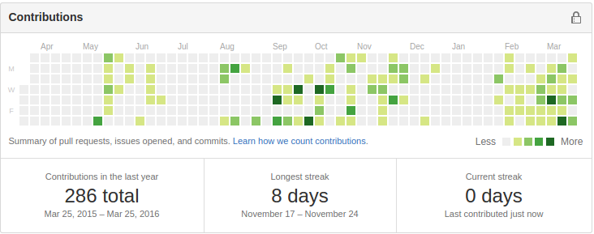

LUKE FITZPATRICK'S PORTFOLIO
Featured below are a selection of the projects I have worked on in my spare time while at school and university. Most of my projects since 2014 are on
my Github page. I've been working hard on improving my knowledge and skills this year, and documenting everything on Github:

I love designing, planning and implementing all kinds of software. I started programming in 2010 when I was 14, and I've been consistently growing as a programmer and designer ever since.
I've taught myself C/C++, Python, HTML/CSS/Javascript and also how to use Git, Emacs, Visual Studio, LaTeX, and the Linux command line.
hover over image to see project in action
Work in Progress I'm working on scraping and analysing NRL match statistics using
Python and
lxml. (
Github Repository)
December 2015 I created a platformer game engine using
Python and
Pygame. It supports live level editing, level storage, key rebinding, a physics and collision engine, and a robust graphics handling system including support for animation. (
Github Repository)
November 2015 I created a game where you control elevators using
Python and
Pygame. To help with this, I also made a little animation preview tool.
(
Github Repository)
February 2016 I created a simple music ratings website using
HTML/CSS
(
The website)
February 2016 I created a band and song name generator using
C++.
(
Github Repository)
June 2015 I created a game where you buy and sell swords using
Python and
libtcod.
(
Github Repository)
and I also made this website!
contact me at lukedfitzpatrick@gmail.com